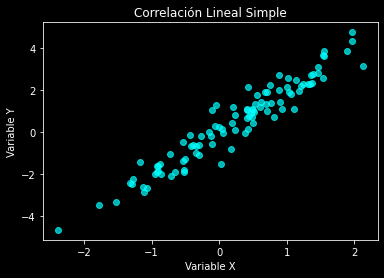
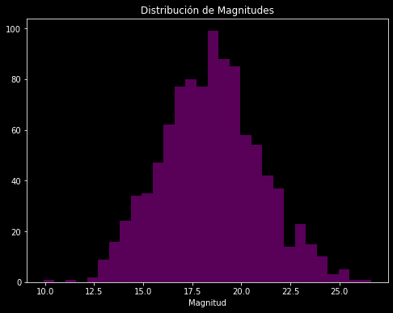
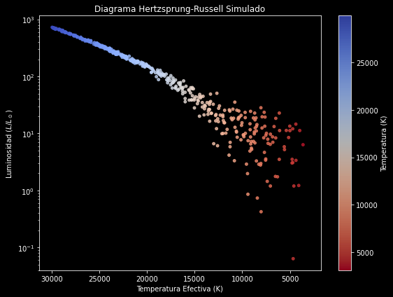
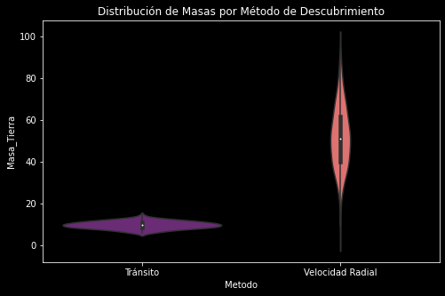
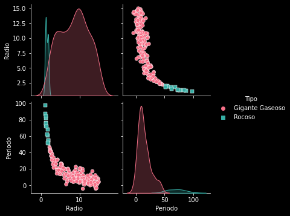
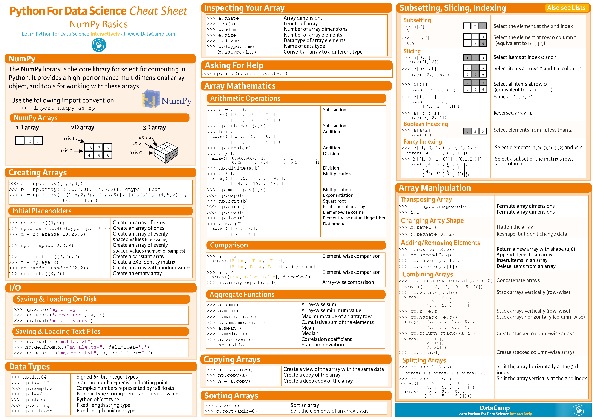
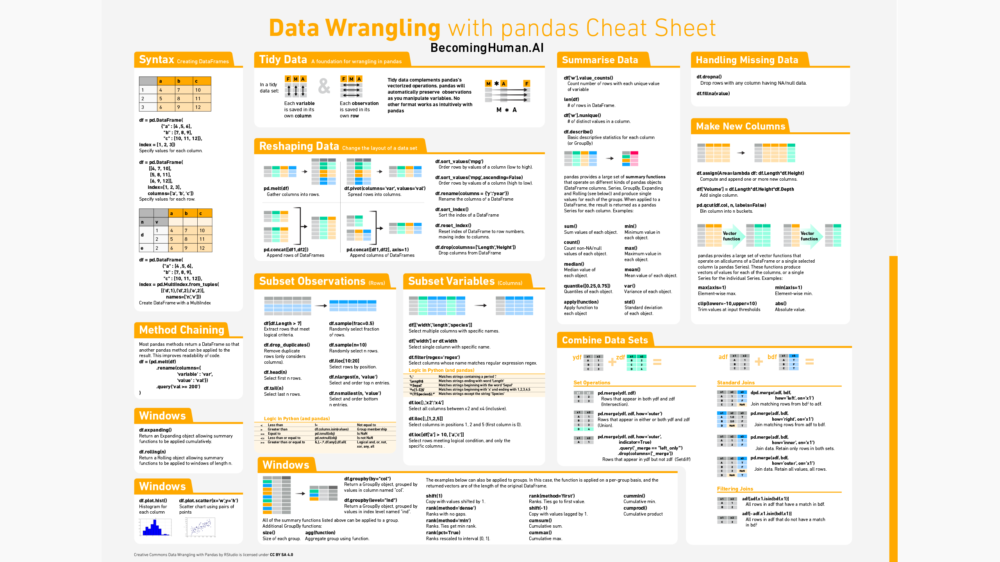
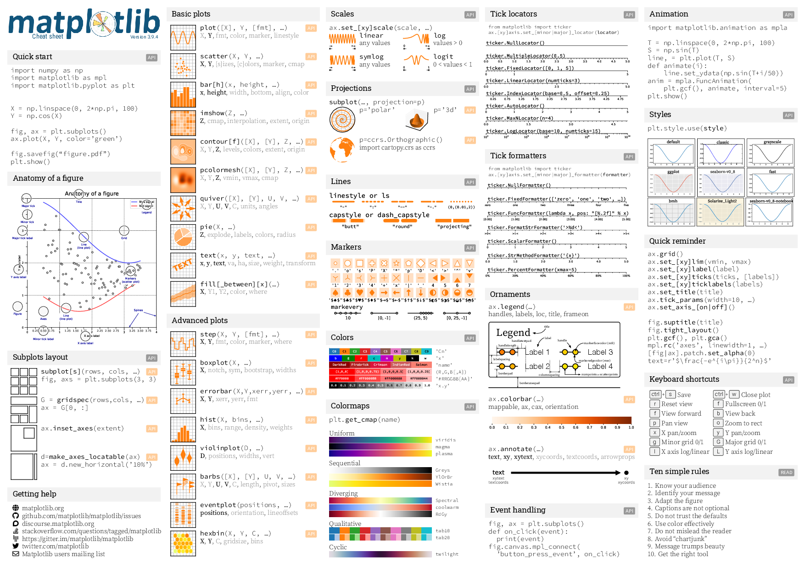
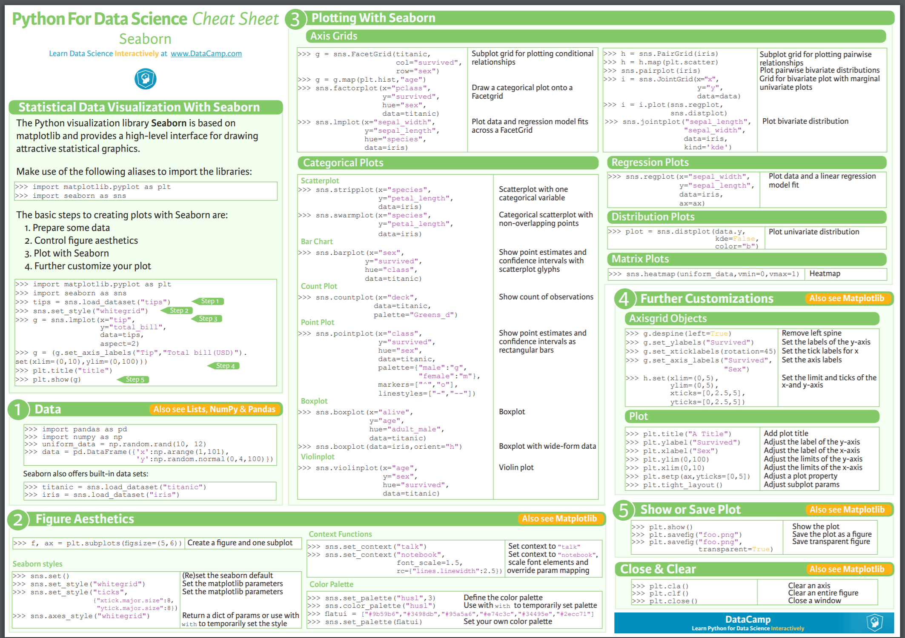

Clase 3: Python Científico (NumPy, Pandas, Matplotlib & Seaborn)#
Objetivos de hoy#
Manipular arreglos numéricos eficientes con NumPy.
Crear visualizaciones básicas con Matplotlib y Seaborn.
Operaciones vectorizadas.
Integración de procesos previos con el análisis y visualización
Introducción General#
El análisis de datos en la astrofísica y ciencias modernas no se hace con ciclos for en Python puro; sería prohibitivamente lento. En su lugar, utilizamos un “stack” de librerías altamente optimizadas.
NumPy: Es el motor matemático. Maneja arreglos de datos en C y Fortran de forma invisible para una velocidad extrema.
Pandas: Es el “Excel” con superpoderes. Maneja datos tabulares, catálogos y series temporales.
Matplotlib: Es el lienzo fundamental para dibujar cualquier tipo de gráfica científica.
Seaborn: Es el pincel elegante. Basado en Matplotlib, permite hacer gráficos estadísticos complejos con muy poco código.
1. NumPy: Computación Numérica de Alto Rendimiento#
NumPy (Numerical Python) introduce el objeto ndarray (arreglo n-dimensional). A diferencia de las listas de Python, un ndarray ocupa un bloque contiguo en la memoria RAM, permitiendo aplicar matemáticas a millones de datos de golpe sin usar bucles. A esto se le llama Vectorización.
Herramientas más importantes:#
np.array(): Crear arreglos.np.linspace()/np.arange(): Crear secuencias numéricas.np.where(): Lógica condicional vectorizada.Operadores booleanos (máscaras) para filtrado rápido.
¿Cuándo usarlo?#
Cuando tienes matrices de datos numéricos crudos (como los píxeles de una imagen FITS astronómica o simulaciones de N-cuerpos) y necesitas aplicarles ecuaciones físicas.
Ejemplo 1: Conversión de Unidades#
import numpy as np
# Supongamos que tenemos distancias estelares en parsecs (pc)
distancias_pc = np.array([1.3, 5.0, 12.4, 20.1, 100.5])
# Queremos convertirlas a años luz. En lugar de un 'for', multiplicamos todo el array
distancias_ly = distancias_pc * 3.26156
print("Distancias en Años Luz:", distancias_ly)
Distancias en Años Luz: [ 4.240028 16.3078 40.443344 65.557356 327.78678 ]
Ejemplo 2: Máscaras Booleanas Complejas e Indexación Numérica#
Encontrar estrellas en la “Secuencia Principal” basándonos en parámetros de temperatura ($T_{eff}$) y gravedad superficial ($log_{10}(g)$).
import numpy as np
np.random.seed(42)
# Generamos 100,000 estrellas simuladas
teff = np.random.uniform(3000, 10000, 100000)
logg = np.random.uniform(0.5, 5.5, 100000)
# Condición física de Secuencia Principal (aprox): T < 8000K y log(g) > 4.0
# Usamos el operador '&' (AND de bit a bit), no 'and' de Python
mascara_ms = (teff < 8000) & (logg > 4.0)
# Extraemos solo las estrellas que cumplen la condición
estrellas_ms_teff = teff[mascara_ms]
estrellas_ms_logg = logg[mascara_ms]
print(f"Población original: {len(teff)} estrellas.")
print(f"Estrellas en Secuencia Principal: {len(estrellas_ms_teff)}.")
Población original: 100000 estrellas.
Estrellas en Secuencia Principal: 21638.
Pandas: Minería de Datos Tabulares#
Pandas está diseñado para limpiar, cruzar y analizar tablas (como los catálogos .csv que descargaste la semana pasada con wget). Sus objetos principales son la Series (1 dimensión, una columna) y el DataFrame (2 dimensiones, una tabla).
Herramientas más importantes:
pd.read_csv(): Leer archivos.df.dropna(),df.fillna(): Control de calidad, manejar datos faltantes (NaN).df.groupby(): Agrupación estadística (similar al GROUP BY de SQL).df.merge(): Cruzar dos catálogos diferentes por un ID común.
¿Cuándo usarlo?
Siempre que tengas un archivo tabular (CSV, TSV, Excel, bases de datos SQL) donde las columnas tengan diferentes tipos de datos (texto, números, fechas). Es el rey de la “Limpieza de Datos” (Data Wrangling).
Ejemplo 3: Carga y Exploración#
Simulamos un diccionario para crear un DataFrame
import pandas as pd
datos = {
'Objeto': ['M31', 'M33', 'NGC104', 'NGC6752'],
'Tipo': ['Galaxia', 'Galaxia', 'Cúmulo', 'Cúmulo'],
'Distancia_kpc': [780, 850, 4.5, 4.0],
'Masa_Msol': [1e12, 5e10, np.nan, 2e5] # Notemos un dato faltante (NaN)
}
df = pd.DataFrame(datos)
print('El DF completo es:\n', df)
print('\n'+'-'*10+'\n')
print('El DF filtrado es:')
# Filtrar solo galaxias
galaxias = df[df['Tipo'] == 'Galaxia']
print(galaxias)
El DF completo es:
Objeto Tipo Distancia_kpc Masa_Msol
0 M31 Galaxia 780.0 1.000000e+12
1 M33 Galaxia 850.0 5.000000e+10
2 NGC104 Cúmulo 4.5 NaN
3 NGC6752 Cúmulo 4.0 2.000000e+05
----------
El DF filtrado es:
Objeto Tipo Distancia_kpc Masa_Msol
0 M31 Galaxia 780.0 1.000000e+12
1 M33 Galaxia 850.0 5.000000e+10
Ejemplo 4: Agrupación y Limpieza (Data Quality)#
Rellenar la masa faltante con la media de su propio ‘Tipo’ (Cúmulo)
df['Masa_Msol'] = df['Masa_Msol'].fillna(df.groupby('Tipo')['Masa_Msol'].transform('mean'))
# Calcular la masa total por tipo de objeto
masa_total = df.groupby('Tipo')['Masa_Msol'].sum().reset_index()
print("\nMasa Total Agrupada:\n", masa_total)
Masa Total Agrupada:
Tipo Masa_Msol
0 Cúmulo 4.000000e+05
1 Galaxia 1.050000e+12
Matplotlib: El Lienzo de la Visualización#
Matplotlib es la columna vertebral gráfica de Python. Tiene dos enfoques: el estilo “MATLAB” (plt.plot()) que es rápido para cosas simples, y el estilo Orientado a Objetos (fig, ax = plt.subplots()), que es obligatorio para crear figuras científicas complejas.
Herramientas más importantes:
plt.subplots(): Crea la figura (el lienzo) y los ejes (los paneles).ax.scatter(),ax.plot(),ax.hist(): Tipos de gráficos.ax.set_xlabel(),ax.set_ylabel(): Etiquetado, vital en ciencia.plt.savefig(): Exportar para tu paper.
¿Cuándo usarlo?
Para tener un control milimétrico sobre cada píxel del gráfico: cambiar el grosor de las líneas, mover leyendas, crear figuras con múltiples sub-paneles y ajustar escalas logarítmicas.
Ejemplo 5: Gráfico de Dispersión simple#
import matplotlib.pyplot as plt
# Usar estilo oscuro (muy usado en astronomía)
plt.style.use('dark_background')
x = np.random.normal(0, 1, 100)
y = x * 2 + np.random.normal(0, 0.5, 100)
plt.scatter(x, y, color='cyan', alpha=0.7)
plt.title("Correlación Lineal Simple")
plt.xlabel("Variable X")
plt.ylabel("Variable Y")
plt.show()

Ejemplo 6. Histogramas y Estadística#
Supongamos que tenemos datos de magnitudes de estrellas (distribución normal simulada).
import numpy as np
import matplotlib.pyplot as plt
magnitudes = np.random.normal(loc=18.5, scale=2.5, size=1000)
plt.figure(figsize=(8, 6))
plt.hist(magnitudes, bins=30, color='purple', alpha=0.7)
plt.title("Distribución de Magnitudes")
plt.xlabel("Magnitud")
plt.show()

Ejemplo 7: Ejes Múltiples y Escalas (Diagrama H-R)#
fig, ax = plt.subplots(figsize=(8, 6))
# Datos simulados de un Cúmulo (Temperatura vs Luminosidad)
temp = np.random.uniform(3000, 30000, 500)
# Relación L ~ T^4 con ruido
lum = (temp/5778)**4 + np.random.normal(0, 10, 500)
# El color del punto dependerá de la temperatura (caliente=azul, frío=rojo)
scatter = ax.scatter(temp, lum, c=temp, cmap='coolwarm_r', s=15, alpha=0.8)
# Configuración Astronómica Crítica:
ax.set_yscale('log') # Luminosidad en escala logarítmica
ax.invert_xaxis() # En astronomía, la temperatura disminuye hacia la derecha!
ax.set_xlabel("Temperatura Efectiva (K)")
ax.set_ylabel("Luminosidad ($L/L_\odot$)")
ax.set_title("Diagrama Hertzsprung-Russell Simulado")
# Añadir barra de color
cbar = plt.colorbar(scatter)
cbar.set_label("Temperatura (K)")
plt.tight_layout()
plt.show()

Seaborn: Visualización Estadística Elegante#
Seaborn envuelve a Matplotlib y a Pandas. Mientras que en Matplotlib debes configurar colores y bucles para agrupar datos, Seaborn entiende los DataFrames de Pandas de forma nativa e infiere cómo mapear columnas a colores o estilos automáticamente.
Herramientas más importantes:
sns.scatterplot(data=df, x='col1', y='col2', hue='categoría')sns.histplot(): Histogramas con curvas de densidad (KDE).sns.pairplot(): Matriz de correlación instantánea para todas las variables numéricas.sns.violinplot(),sns.boxplot(): Distribuciones.
¿Cuándo usarlo?
Durante el Análisis Exploratorio de Datos (EDA). Cuando tienes un catálogo de Pandas con múltiples características (masas, radios, periodos, métodos) y quieres ver rápidamente cómo se correlacionan o se distribuyen por categorías sin escribir código de configuración complejo.
Ejemplo 8: Distribuciones (Violin Plot)#
Simulado de exoplanetas
import seaborn as sns
metodos = ['Tránsito'] * 100 + ['Velocidad Radial'] * 100
masas = np.concatenate([np.random.normal(10, 2, 100), np.random.normal(50, 15, 100)])
df_exo = pd.DataFrame({'Metodo': metodos, 'Masa_Tierra': masas})
plt.figure(figsize=(8, 5))
# Un violin plot muestra la distribución de densidad para cada categoría
sns.violinplot(data=df_exo, x='Metodo', y='Masa_Tierra', palette='magma')
plt.title("Distribución de Masas por Método de Descubrimiento")
plt.show()

Ejemplo 9: Pairplot (Relaciones Multivariables)#
Simulamos un catálogo con múltiples propiedades correlacionadas
np.random.seed(0)
n = 200
radio = np.random.uniform(1, 15, n)
# Periodo más corto si el radio es más grande, con ruido
periodo = (100 / radio) + np.random.normal(0, 5, n)
# Clasificamos según el tamaño
tipo = ['Rocoso' if r < 2 else 'Gigante Gaseoso' for r in radio]
df_multi = pd.DataFrame({'Radio': radio, 'Periodo': periodo, 'Tipo': tipo})
# El Pairplot dibuja scatter plots entre todas las variables numéricas,
# coloreadas por la categoría ('Tipo').
# Es la herramienta más potente para encontrar correlaciones ocultas.
sns.pairplot(df_multi, hue='Tipo', palette='husl', markers=["o", "s"])
plt.show()

Cheatsheet#
Es importante saber de todos los posibles usos que tiene cada una de las herramientas, así que dejamos por acá unas cheatsheet para cada uno de las librerías con el fin de acceder de manera rápida y sencilla a sus funciones.
Cheatsheet para Numpy

Imagen tomada de: Link
{kind=link}
Cheatsheet para Pandas

Imagen tomada de: Link
Cheatsheet para Matplotlib

Imagen tomada de: Link
Cheatsheet para Seaborn

Imagen tomada de: Link
Ejercicios de clase#
A continuación se presentan un conjunto de ejercicios para ser desarrollados durante la clase.
Ejercicio 1: Integración Numérica del Flujo#
Crea un array tiempo de 0 a 10 segundos con 10,000 puntos usando np.linspace.
Modela una señal de un púlsar:
señal = np.sin(2 * np.pi * 5 * tiempo) * np.exp(-tiempo / 3). (Una onda de 5Hz con decaimiento exponencial).Encuentra los instantes de tiempo donde la señal supera el umbral de 0.5 usando máscaras.
Calcula el “flujo total” (la suma acumulada) de la señal sólo durante esos instantes que superan el umbral. Solución:
mascara = señal > 0.5; tiempos_altos = tiempo[mascara];flujo_total = np.sum(señal[mascara]).
# Escribe tu código bash aquí
Ejercicio 2: Limpieza Extrema de Catálogos#
Suponga un DataFrame df con las columnas [Objeto, $B_{mag}$, $V_{mag}$] con múltiples NaN en las magnitudes.
Crea una nueva columna llamada $Color_{BV}$ que sea la resta $B_{mag}$ - $V_{mag}$.
Pandas dejará como NaN el color si falta alguna magnitud. Elimina todas las filas (
dropna()) que no tengan el índice de color calculado.Encuentra cuál es el objeto con el índice de color más bajo (el más azul) usando el método df.loc[df[Color$_{BV}$].idxmin()].
# Escribe tu código bash aquí
Ejercicio 3: El Panel Observacional#
Usa
plt.subplots(2, 2)para crear una figura de 2x2 (4 paneles).En el panel (0,0) grafica una curva seno, en (0,1) un coseno.
En la fila inferior (paneles 1,0 y 1,1) grafica dos histogramas con distribuciones normales (
np.random.randn(1000)), pero con diferentes “bins” (e.g., 10 y 50).Asegúrate de añadir títulos individuales a cada “ax” (usando
ax[0,0].set_title(...)) y llama aplt.tight_layout()al final para evitar que los textos se superpongan.
# Escribe tu código bash aquí
Ejercicio 4: KDE Bivariado#
Carga un dataset incluido en Seaborn, por ejemplo, los pinguinos:
df = sns.load_dataset("penguins").Queremos ver la relación topológica entre el largo del pico (
bill_length_mm) y la profundidad (bill_depth_mm).En lugar de un gráfico de dispersión (Scatter), usa
sns.kdeplot()pasando las dos columnas, y activa el parámetrofill=True(para crear contornos sombreados de probabilidad topográfica) y separa por especies usandohue='species'.
# Escribe tu código bash aquí
Proyectos Integradores (Consola + GitHub + Análisis Científico)#
Modalidad: Parejas (IP y Co-I). Ambos deben tener acceso a su terminal (Linux/WSL) para los comandos CLI/Git, y pueden usar scripts de Python locales o un Notebook local (no web) para el análisis gráfico.
Proyecto Integrador 1: “Descubriendo la Estructura Galáctica”#
Obtener datos de la misión Gaia desde el Observatorio Virtual usando CLI, limpiarlos, graficar la distribución de estrellas usando Seaborn/Matplotlib, y someter el código a revisión en GitHub.
Investigador Principal (IP):
Crea un repositorio en GitHub (proyecto_estructura_galactica) e invita al Co-I.
En su terminal local, el IP clona el repo.
Usa CLI para bajar un extracto del catálogo de Gaia DR3 con astrometría de alta calidad.
wget -q -O gaia.csv "https://tapvizier.cds.unistra.fr/TAPVizieR/tap/sync?request=doQuery&lang=ADQL&format=csv&query=SELECT+TOP+50000+Source,RA_ICRS,DE_ICRS,Plx,e_Plx,Gmag+FROM+%22I/355/gaiadr3%22+WHERE+Plx)>5"
Aplica Control de Calidad (DQ) desde Bash para remover cualquier error:
awk -F',' 'NR==1 || $4 != ""' gaia.csv > gaia_limpio.csv.Añade
gaia.csval.gitignore. Hace commit degaia_limpio.csvy hacepusha la rama main.
Co-Investigador (Co-I):
Clona el repositorio. Crea una rama
analisis_paralaje.Crea un script de Python (
analisis.pyo un Jupyter Notebook) en el repositorio.Usa Pandas para cargar
gaia_limpio.csv.Calcula la distancia en parsecs creando una nueva columna:
df['Distancia_pc'] = 1000 / df['Plx']. (Asumiendo paralaje en milisegundos de arco).Usa Seaborn para crear un
sns.histplotde la columnaDistancia_pccon una curvakde=Truepara ver cómo se distribuyen las estrellas en nuestro vecindario galáctico.Guarda la figura, hace commit del código y de la figura, hace push a su rama, y abre un Pull Request.
Peer Review:
El IP revisa el código de Python en el PR. Verifica que la división por cero no sea un problema (gracias a la limpieza inicial). Aprueba el PR (Merge).
# Escribe tu código bash aquí
Proyecto Integrador 2: “El Zoológico de Exoplanetas”#
Usar el API de NASA, limpiar datos de misiones exoplanetarias y utilizar diagramas de dispersión avanzados en Matplotlib para replicar un gráfico estándar de la industria (Masa vs Radio).
Investigador Principal (IP):
Crea un repositorio en GitHub (
zoo_exoplanetario) e invita al Co-I.En su terminal local, el IP clona el repo.
Usa CLI para bajar el catálogo de sistemas planetarios de la NASA.
wget -q -O exoplanetas.csv "https://exoplanetarchive.ipac.caltech.edu/TAP/sync?query=SELECT+pl_name,discoverymethod,pl_rade,pl_bmasse+FROM+ps&format=csv"
Aplica DQ desde Bash para evitar que Pandas colapse por datos faltantes críticos. Vamos a requerir que los planetas tengan tanto Radio (columna 3) como Masa (columna 4).
Añade
exoplanetas.csval.gitignore. Hace commit de exo_limpios.csv y push a main.
Co-Investigador (Co-I):
Clona el repo. Crea una rama
analisis_masaradio.Crea su entorno de trabajo de Python. Usa Pandas para cargar
exo_limpios.csv.Usa Seaborn (
sns.scatterplot) o Matplotlib para hacer un gráfico de Masa (eje X) vs Radio (eje Y).En escalas lineales, los exoplanetas gigantes aplastarán a los rocosos en una esquina. El Co-I debe usar escalas logarítmicas en Matplotlib (
plt.xscale('log')yplt.yscale('log')).Usa el parámetro
hue='discoverymethod'(si usa Seaborn) para colorear los puntos dependiendo de cómo fueron descubiertos (TránsitovsVelocidad Radial).Guarda la figura, hace commit, push, y abre un Pull Request.
Peer Review:
El IP revisa el PR. Se dará cuenta de que el gráfico log-log separa bellamente las poblaciones de planetas tipo Tierra, Neptunos y Júpiteres Calientes según su método de descubrimiento. Tras revisar el uso de la API de Matplotlib/Seaborn, aprueba el PR.
# Escribe tu código bash aquí
Proyecto de Investigación: Arquitectura Exoplanetaria y el “Desierto de Neptunos”#
El Problema Científico#
En las últimas décadas, hemos descubierto miles de exoplanetas, revelando que nuestro Sistema Solar no es la regla, sino una excepción. Para entender cómo se forman y evolucionan los planetas, los astrofísicos estudian dos relaciones fundamentales:
Masa vs. Radio: Nos revela la densidad y, por ende, la composición interna (rocoso, gigante de hielo, gigante gaseoso).
Periodo Orbital vs. Masa: Nos muestra dónde “sobreviven” los planetas. Existe una región misteriosa muy cerca de la estrella anfitriona donde no encontramos planetas del tamaño de Neptuno, conocida como el “Desierto de Neptunos”.
Misión del Equipo:
Trabajarán en paralelo usando GitHub. El Investigador Principal (IP) analizará la composición interna (Masa-Radio), mientras que el Co-Investigador (Co-I) buscará la evidencia del Desierto de Neptunos (Periodo-Masa). Al final, deberán fusionar su código y co-escribir la interpretación física en el README.md.
Fase 1: Ingeniería de Datos y Entorno#
Investigador Principal (IP)
El archivo crudo de la NASA (PS_2026.03.02_04.48.37.csv, Link) tiene casi 100 líneas de comentarios y registros duplicados (múltiples papers midiendo el mismo planeta).
Crea un repositorio en GitHub llamado
arquitectura_exoplanetariae invita al Co-I. Clónalo localmente.Añade el archivo CSV crudo a tu
.gitignore.Usa la línea de comandos para generar una muestra de “Alta Calidad” sin duplicados:
Omitir comentarios (
#).Filtrar solo la solución por defecto (
default_flag= 1).Extraer solo: Nombre, Método, Periodo, Radio y Masa.
Finalmente, excluir filas donde el Periodo, Masa o Radio estén vacíos.
Guarda el resultado como
cat_limpio.csv, haz commit y súbelo amain.
Fase 2: Análisis de Composición Interna#
Investigador Principal (IP)
Crea una rama llamada
analisis_composicion.Crea un script en Python (
plot_masa_radio.py) usando la línea de comandos. Cargacat_limpio.csvcon Pandas.Calcula la Densidad aproximada de cada planeta en $$g/cm^3$$. (Sabiendo que la Tierra tiene $\rho \approx 5.51 \text{ g/cm}^3$, la fórmula es: $\rho = 5.51 \times \frac{M}{R^3}$).
Usa Matplotlib para crear un Scatter Plot de Masa vs. Radio.
Usa escala logarítmica en ambos ejes.
Colorea los puntos usando el array de densidad calculado y un mapa de color.
Añade una barra de color.
Guarda la imagen (
masa_radio.png), haz commit y abre un Pull Request.
Fase 3: La Búsqueda del Desierto#
Co-Investigador (Co-I)
Clona el repositorio y actualízate (
git pull). Crea tu propia rama:analisis_orbital.Crea un script en Python (
plot_desierto.py). Carga el mismocat_limpio.csvcon Pandas usando línea de comandos.Usa Seaborn o Matplotlib para crear un Scatter Plot de **Periodo Orbital vs. Masa **.
Usa escala logarítmica en ambos ejes.
Ajusta la transparencia para observar las concentraciones de densidad.
Guarda la imagen (
desierto.png), haz commit y abre un Pull Request paralelo al del IP.
Fase 4: Fusión y Co-Autoría Científica#
Ambos en conjunto.
Ambos deben revisar y aprobar el Pull Request del otro en GitHub. Hagan el Merge a
main.Ahora que
maintiene ambos gráficos y scripts, el IP debe hacer ungit pulla su máquina local.El Análisis Escrito:
Abran el archivo
README.md.Deben incrustar las dos imágenes generadas y redactar en colaboración la discusión de resultados.
Deben responder conjuntamente a:
Sobre el Gráfico 1: Identifiquen dónde están los “Júpiteres” (Gigantes gaseosos de baja densidad) y dónde las “Supertierras” (Rocosos de alta densidad). ¿A partir de qué radio los planetas dejan de ser rocosos densos y se vuelven “esponjosos” (retienen atmósferas masivas de H/He)?
Sobre el Gráfico 2: Observen la región de periodos muy cortos (< 5 días) y masas intermedias (entre 10 y 50 masas terrestres). Esta zona está extrañamente vacía (El Desierto de Neptunos). Teoricen por qué: Si un planeta de masa intermedia orbita tan cerca de su estrella, ¿qué proceso físico destructivo impide que mantenga su tamaño original y “sobreviva” en ese desierto?
# Escribe tu código bash aquí